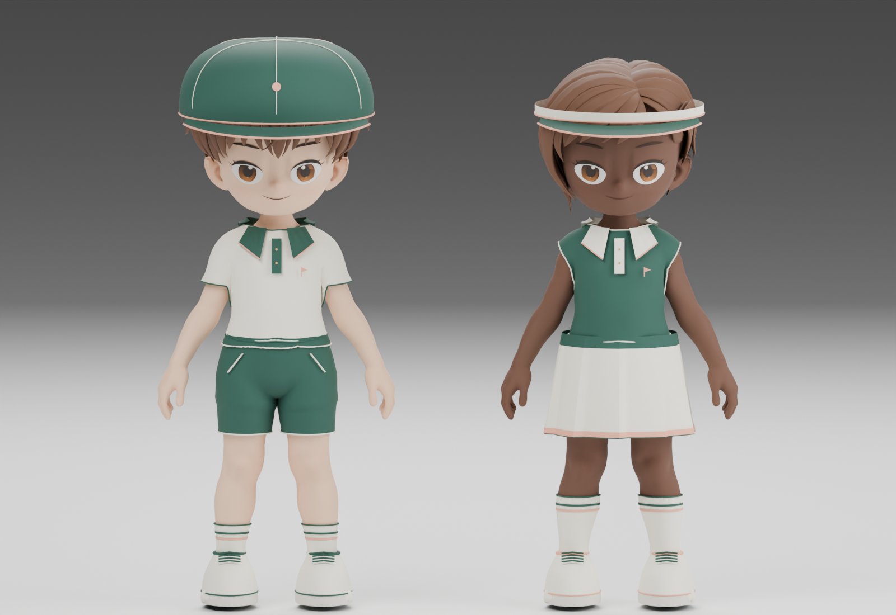

TrainerOS · примерка 01
На поле для гольфа
Два образа, десять отдельных вещей. Поло, низ, носки, обувь и головной убор можно комбинировать. Под юбкой — существующие шорты персонажа.

Примерка со всех сторон
Каждая вещь отдельно
Это реальные рендеры подготовленных моделей. Кепка показана с короткой стрижкой, козырёк — с каре. Коллекция пока на примерке: подключение к системному гардеробу и проверка игровых движений гольфа — следующий этап.